Вряд ли где-нибудь в мире можно найти столько же красивых существ, как бабочки. С древнейших времен эти невероятные насекомые считались символами красоты, вечности, молодости и душевного перерождения. Это настоящие живые цветы, которые регулярно фигурируют в различных сказках, легендах и эпосах.
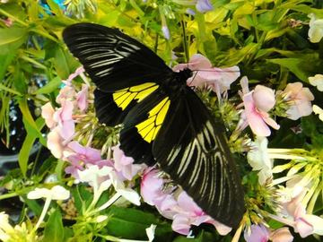Их красота считалась настолько нереальной, что у древних славян бытовало поверье, согласно которому в бабочек превращались только самые злые и могущественные колдуньи, которые продали душу ради того, чтобы после смерти обладать такой красотой. Фантастические узоры на крыльях бабочек образуются уникальным сочетанием разноцветных микроскопических чешуек каждой особи. Благодаря особым ребристым стенкам этих чешуек, солнечный свет преломляется, отображаясь на крыльях разными цветами и узорами.
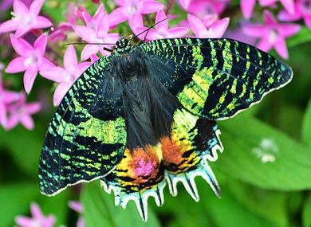Мадагаскарская Урания обладает сравнительно крупными размерами: размах его крыльев часто превышает девять-десять сантиметров. Если изучить крылья этой уникальной бабочки под микроскопом, можно будет увидеть, что каждая роговая чешуйка является уникальной: вы не найдете ни одной пары, чей цвет будет абсолютно идентичен. Отличительной особенностью раскраски крыльев этого создания является особая белая окантовка — именно по ней чаще всего определяют Уранию. Фантастически яркая расцветка бабочки служит грозным предупреждающим сигналом для животных, находящихся выше в пищевой цепочке. В теле Мадагаскарских Ураний содержится достаточное количество сильнодействующего яда, чтобы убить небольшую пичужку. Урании — дневные бабочки. По ночам они в огромных количествах собираются в одном месте и стаей устраиваются на ночлег.
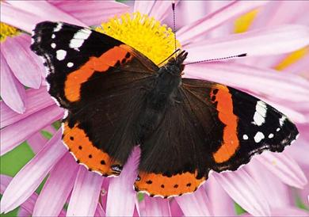Адмирал — бабочка, красота которой часто недооценивается из-за её широкого распространения. Каждое лето сонмы бабочек-адмиралов проносятся в воздухе. Наверное, каждый из нас ее видел, для многих она стала привычным символом лета. Из-за этого многим людям сложно признать ее одной из самых красивых бабочек мира, но зарубежные ценители прекрасного однозначно высказываются в ее пользу. Уникальная черно-бело-оранжевая расцветка и ежегодные перелеты на зимовку в теплые африканские страны сделали эту бабочку широко известной во всем мире. Размах крыльев достигает всего пяти-шести сантиметров, но эта красавица обладает другой отличительной особенностью: срок ее жизни часто превышает девять месяцев, что делает бабочку-Адмирала представительницей одного из самых долгоживущих видов бабочек на Земле
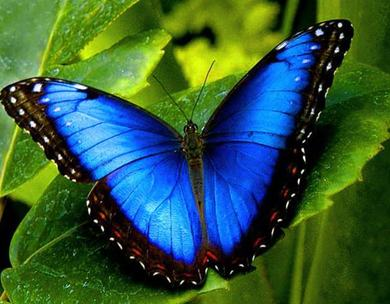Морфа Пелеида обитает практически во всех странах Центральной и Южной Америки: в Коста-Рика, Эль-Сальвадоре, Тринидаде, Парагвае и Мексике. В переводе с древнегреческого языка слова «Морфо Пелеида» означают «великолепная красавица». Похоже, некогда одного из энтомологов настолько впечатлила ярко-синяя окраска ее крыльев, обрамленных черно-белой рамкой с вкраплениями оттенков красного и оранжевого цветов, что он не смог подобрать для этой бабочки более подходящего названия. К сожалению, эта великолепная красавица живет совсем недолго: всего две-три недели. Яркая окраска служит сигнализирующим инструментом в период спаривания, а также отпугивает птиц и насекомых, употребляющих ее в пищу. Отличительной особенностью этого вида считается то, что самцы Морфо Пелеида живут отдельно от самок, группами.
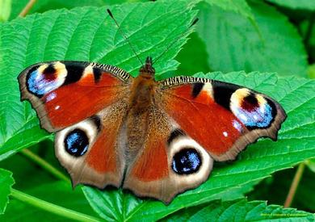Одним из самых прекрасных представителей отряда чешуекрылых мира признается также Павлиний глаз. Латинское название бабочки происходит от имени Īnachis — царя Инаха и его дочери Ио в древнегреческой мифологии. Цветовая гамма крыльев этой бабочки чем-то напоминает Адмиралов. Схожими также является их продолжительность жизни, которая часто превышает девять-десять месяцев, и сравнительно небольшой размах крыльев, составляющий около пяти с половиной сантиметров. Главной отличительной особенностью Павлиньего глаза являются четыре цветовых пятна на крыльях, которые при наличии должного воображения могут сойти за глаза. Удивительный защитный механизм, зрительно увеличивающий размеры этой бабочки в глазах ее естественных врагов. На зиму Павлиний глаз забивается в щели под кору деревьев, где и дожидается наступления поры оттепелей.
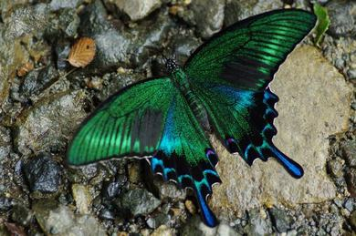Среди обитательниц нашего отечества необычной формой и расцветкой своих уникальных крыльев выделяется Синий махаон — или, как его еще называют, Парусник Маака. Парусник Маака был назван в честь Ричарда Карловича Маака — русского натуралиста, исследователя Сибири и Дальнего Востока. Это удивительное насекомое, обладающее непередаваемо фантастической расцветкой и большими крыльями — их размах достигает ста двадцати пяти сантиметров у самцов, и примерно на десять сантиметров больше — у самок. На территории стран СНГ эта бабочка считается самой крупной, при этом основным ареалом ее обитания является Сахалинский полуостров. Крылья самцов окрашены в глубокий изумрудно-зеленый цвет, расцветка самок очень сильно варьируется. Часто эти бабочки стаями оседают на берегах небольших водоемов или на открытых площадках сразу после выпадения росы или дождя. Спугнутая стая взмывает в небо потрясающим изумрудным фейерверком.
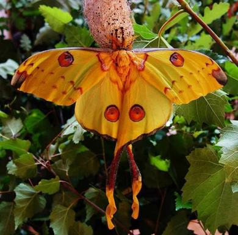Благодаря двум удивительно большим отросткам на крыльях, Мадагаскарскую Комету часто называют самой длинной бабочкой в мире — несмотря на то, что буквально в первые дни ее жизни хвосты отпадают. Ценителей прекрасного поражает не столько яркая окраска этой бабочки, сколько форма ее тела и крыльев. Крылья красавицы продолжены двумя хвостами длиной без малого двадцать сантиметров, которые служат в качестве вспомогательного инструмента балансировки при полете в воздухе. К сожалению, через довольно короткое время после появления бабочки на свет, эти хвосты отпадают за ненадобностью. Благодаря необычному строению своего тела, Мадагаскарская Комета получила свое второе название — Африканская лунная моль. Помимо формы крыльев, энтомологов поражает также их размах, достигающий восемнадцати сантиметров.
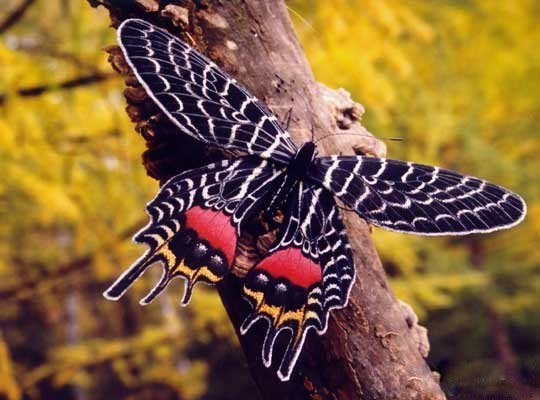Слава Бутана обитает преимущественно в высокогорных лесах на высотах до 2800 метров над уровнем моря и в данный момент находится под угрозой исчезновения. Даже самого искушенного ценителя бабочек поразит уникальная форма ее крыльев, которые отдаленно напоминают стрекозиные. Их размах, бывает, достигает десяти сантиметров. Каждое из крыльев продолжается тремя небольшими хвостиками, придающими им поистине очаровательный вид. К счастью, эти бабочки ядовиты и, соответственно, несъедобны. Потенциальных едоков предостерегают яркая красно-оранжевая расцветка и круглые ярко-алые пятна на концах крыльев.
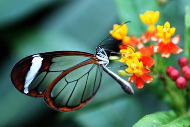Знакомьтесь с необычным созданием, которое на первый взгляд даже сложно назвать бабочкой. Перед вами Грета Ото, или Стеклянная бабочка. Это необычное насекомое широко распространено на территории Мексики и Аргентины. На неискушенный взгляд эта бабочка больше походит на комара. К счастью для жителей Южной и Центральной Америки это не так: ведь размах крыльев этого «комарика» может превышать пять сантиметров — далеко не самый маленький представитель отряда чешуекрылых. В местной экосистеме он играет крайне важную роль, поскольку опыляет большинство произрастающих в данном регионе ядовитых растений. Прозрачные крылья с ярко-оранжевым ободком сигнализируют об огромном количестве накопленных в теле бабочки токсинов. Пообедавшая ею птица вряд ли проживет долго. Эта бабочка — кладезь природных токсинов, смертельно опасных для жизни тех, кто решится ею пообедать
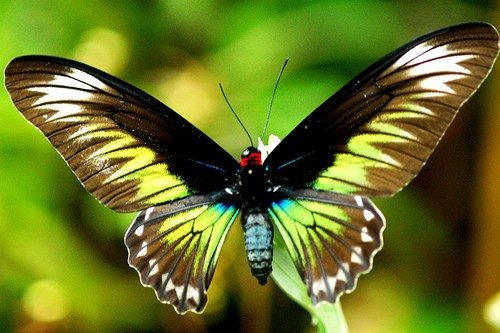Птицекрыл королевы Александры — крупнейшая дневная бабочка в мире. Основным ареалом обитания этой удивительной бабочки является территория Папуа — Новой Гвинеи. Самцы Птицекрыла имеют более яркую окраску, которая помогает им привлекать самок в период спаривания. Часто именно из-за нее они становятся объектом пристального внимания энтомологов и коллекционеров. В свою очередь, самки обладают более крупными размерами: размах их крыльев может достигать тридцати сантиметров.
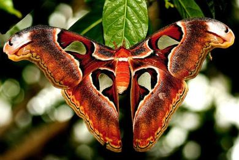Завершить наш небольшой обзор самых красивых и удивительных бабочек мира мы решили поистине необычным экземпляром. Многие о нем слышали, но мало кто видел своими глазами. Это — Князь тьмы, или просто Атлас. Некоторые особи этого удивительного вида бабочек достигают поистине гигантских размеров. В семействе чешуекрылых эта бабочка по праву признается самой большой. Крупнейший из официально зарегистрированных представителей этого вида имел размах крыльев в двести шестьдесят два сантиметра. Даже по человеческим меркам — это настоящий гигант. Узоры на его крыльях чем-то напоминают голову змеи, благодаря чему в Китае его прозвали аналогичным именем.
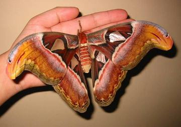При этом продолжительность жизни Атласа составляет всего десять-одиннадцать дней. Неизвестно, сколько дней прожила бы бабочка-Атлас в домашних условиях, поскольку из-за огромных размеров их разведением занимаются разве что специализированые энтомологические центры; но вряд ли продлить срок жизни Атласа получилось бы надолго. Короткий срок жизни обусловлен тем, что у гусеницы Атласа в процессе трансформации атрофируется рот: бабочка существует только за счет питательных веществ, которые успела накопить до окукливания.
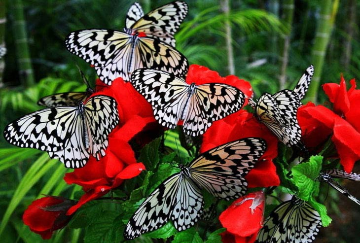